Real Options
REM1 — Session 5 of 6
Professor Thies Lindenthal
htl24@cam.ac.uk
https://lindenthal.eu
September 2026
## <br><br><br><br><br><br><span class="transparent70">£48 million?!</span><span class="subtitle transparent70"><br>2.9 acre industrial site in London</span> * <span class="transparent70">Late 2021, GLP made offer after competive bidding from more than a dozen players.</span> * <span class="transparent70">Guide price: £23 million</span>
## <span class="transparent70">£48 million - for what?</span> <span class="subtitle"><br></span> * <span class="transparent70">20 year lease expires in 2023: Currently let at £13.50/sqft.</span> * <span class="transparent70">Market rent: £25/sqft.</span> * <span class="transparent70">Relet or redevelop?</span>
## <span class="transparent70">Value of land</span><span class="subtitle"><br></span> * <span class="transparent70">Same value (per sqft.) as neighbouring lot?</span>
## <span class="transparent70">Value of land</span><span class="subtitle"><br></span> * <span class="transparent70">Low DCF at the moment. Re-development possible?</span>
## Who owns England? <span class="subtitle"><br>Housebuilders own (ten)thousands of lots.</span> * Estimates for 11 largest English housebuilders: at least 40K titles in their names (→ <a href="http://www.whoownsengland.org">whoownsengland.org</a>) - Taylor Wimpey alone owns more than 12,000 titles via more than 400 companies. Estimates are too low - more complete sources show higher numbers. <p>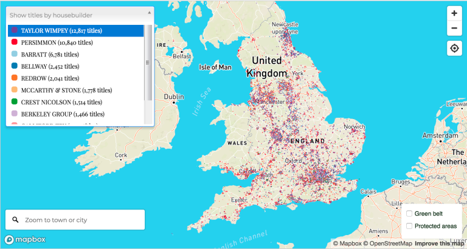</p> * Why don’t they build? It surely must be profitable? * 2025/26: Britain’s largest housebuilders hold land banks sufficient for 441,000+ homes (~£200bn).
<p>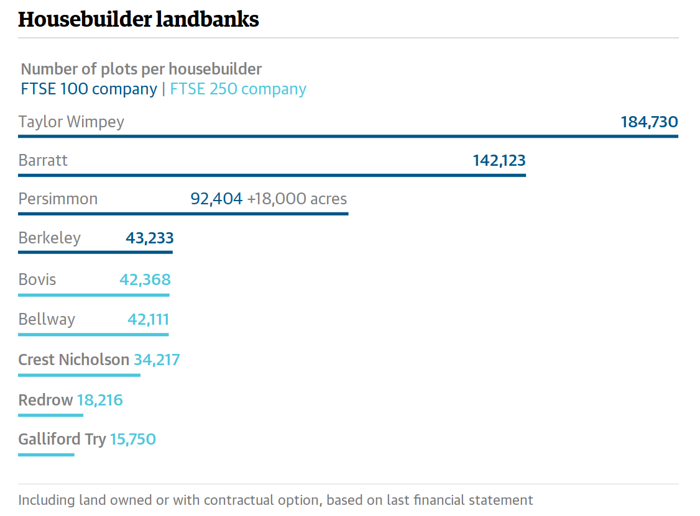</p> <p class="source">Source: <a href="https://www.theguardian.com/society/2015/dec/30/revealed-housebuilders-sitting-on-450000-plots-of-undeveloped-land">The Guardian</p>
## Land: A call option<span class="subtitle"><br></span> * An option is the right without obligation to obtain something of value upon the payment or giving up of something else of value. * Core concepts/terms - Asset obtained by exercise of option is the <strong>underlying asset</strong>. - That what is given up is the <strong>exercise price</strong>. - American options can be exercised <strong>any time</strong>, European options only at predefined expiration date. - <strong>Financial options</strong> are based on financial assets, often traded on exchanges. - <strong>Real option</strong> in property offer the right but not obligation to e. g. change the physical attributes of a property: (re-)develop, extend, change floorplan, change of use, ...
## Numerical Example<span class="subtitle"><br>Option Value: Land valuation & development timing decision</span> * (Example nicked from <a href="https://www.routledge.com/Commercial-Real-Estate-Analysis-for-Investment-Finance-and-Development/Geltner-Miller-VanDeMinne-Eichholtz-Lindenthal-Shen/p/book/9781041076391">Geltner et al.</a>) * XYZ Development owns a tract of land that could be developed into a property worth `$`100m today * Current construction costs for this property are `$`88.24m - Construction costs are estimated to rise by 2% annually - The appropriate discount rate for XYZ’s typical projects is 20% annually * Adding uncertainty - If XYZ postpones the development, markets can either develop favourably in the coming year (new sales price `$`113.21m) or take a dip (new price `$`78.62) - Chances for the positive scenario are 70%, and 30% for the negative case
## Cashflows, Prob., & NPV <span class="subtitle"><br>Land valuation and the development timing decision.</span> <p>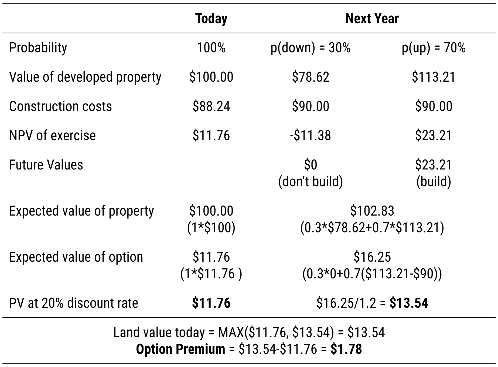</p>
## Arbitrage perspective<span class="subtitle"><br>What is a fair value for the cashflows from the option?</span> * Replicating the option’s outcomes with a combination of financial assets. - If we can price the replicaton portfolio, then we can price the option: Same price for identical cashflows! * Assumption: complete and frictionless markets - XYZ can buy or sell (including short sales) land, built properties and risk-free bonds - No trading costs - Any fraction or quantity possible (e. g. ⅔ of a building) * In this example, it is possible to observe the total returns expected by investors - For risk-free bonds: 3% - For developed property: 9%
## The replicating portfolio<span class="subtitle"><br>Debt and developed property: How to find portfolio weights?</span> * Not difficult in binomial word: Two unknown quantities to determine - The share of future building to purchase: N - The amount to borrow: B * With... - P representing the replicating portfolio; r<sub>f</sub> is the risk-free rate at which one can borrow; V is the value of the newly built building; $C_1^{up}$, $C_1^{down}$ = cash flows at each scenario in year 1. * Cash flows are given by linear equations... - (1) $P_1^{up} = N \times V_1^{up} - (1+r_f) B = C_1^{up} $ and - (2) $P_1^{down} = N \times V_1^{down} - (1+r_f) B = C_1^{down}$, * which can be rearranged to... - (3) $N = \frac{C_1^{up}-C_1^{down}}{V_1^{up}-V_1^{down}}$ and - (4) $ B = \frac{N \times V_1^{down} -C_1^{down} } {1+r_f}$.
## Back to our example...<span class="subtitle"><br>We know $C_1^{up},C_1^{down}, V_1^{up}, V_1^{down}, r_f$ and can solve for N and B</span> * Parameter values - V<sub>down</sub>: `$`78.62 - V<sub>up</sub>: `$`113.21 - C<sub>down</sub>: 0 - C<sub>up</sub>: `$`23.21 - r<sub>f</sub>: 0.03 * Plug everything into (3) and (4) - $N = \frac{C_1^{up}-C_1^{down}}{V_1^{up}-V_1^{down}} = \frac{\\$23.21-0}{\\$113.21-\\$78.62} = 0.67$ - $ B = \frac{N \times V_1^{down} -C_1^{down} } {1+r_f} = (N \times \\$78.62 -0 )/(1+0.03) = \\$51.22$
## Arbitrage perspective <span class="subtitle"><br>Create portfolio that produces exactly same cashflows <br>— and for which we know the fair price.</span> * Assume, XYZ can purchase 67% <sup>(*)</sup> of the building in one year time from now - Present value: $0.67 \frac{0.7 \times \\$113.21 + 0.3\times \\$78.62}{1.09} = 0.67 \frac{\\$102.83} {1.09} = \\$63.29 $ * Also, XYZ borrows `$`51.21m to partly finance the purchase - Geared position. Own capital: $ \\$63.29m-\\$51.21m = \\$12.09m $ - At year 1, pay back the debt: $ \\$51.21m \times 1.03 = \\$52.75m $ <p class="source" style="color: red;"><sup>(*)</sup>To replicate the calculations, don’t use 67% but 67.082%, rounding errors otherwise.</p>
## Binomial outcome...<span class="subtitle"><br>Replicated cash flows cost `$`12.09 — This is the land’s value.</span> <p>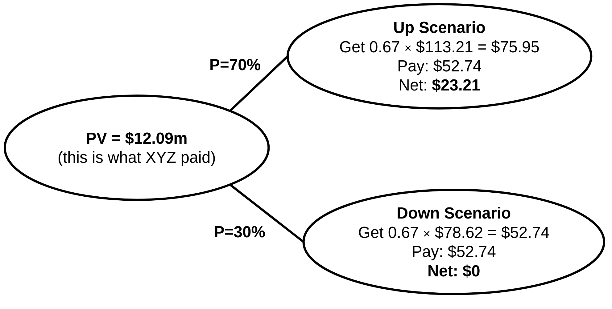</p> * What is the required rate of return (to arrive at PV of `$`12.09)?
## Consistent pricing of risk? <span class="subtitle"><br>Yes!</span> * Required rate of return for replication portfolio is 34.42% - Return: $ \frac{0.7 \times \\$23.21 - \\$12.09}{ \\$12.09} = \frac{\\$4.16}{ \\$12.09} = 34.42\\%$ - Clearly, the earlier assumption of a 20% discount rate in NPV example was too low, - Discount the `$`16.25 at 34.42% for an NPV of `$`12.09 (ignore rounding errors) * Is this in line with the market’s price of risk? Risk = range of outcomes (binomial case). Both risk <em>and</em> risk premium scale by the same factor: | | Built property | Development option | Ratio | |:---|---:|---:|---:| | Risk: range of outcomes | 20% − (−16.67%) = 36.67% | (23.21 − 0) / 12.09 = 192% | 5.24× | | Risk premium: E[r] − r<sub>f</sub> | 9% − 3% = 6% | 34.42% − 3% = 31.42% | 5.24× | | Premium per unit of risk | 6 / 36.67 = 0.164 | 31.42 / 192 = 0.164 | 1 | Note: $(0.7 \times 113.21 + 0.3 \times 78.62)/1.09 = 94.34$
## Consistent pricing of risk <span class="subtitle"><br>Risk premium per unit of risk, for property and land. </span> * Risk, measured as range of outcomes, is consistently priced.<br><p>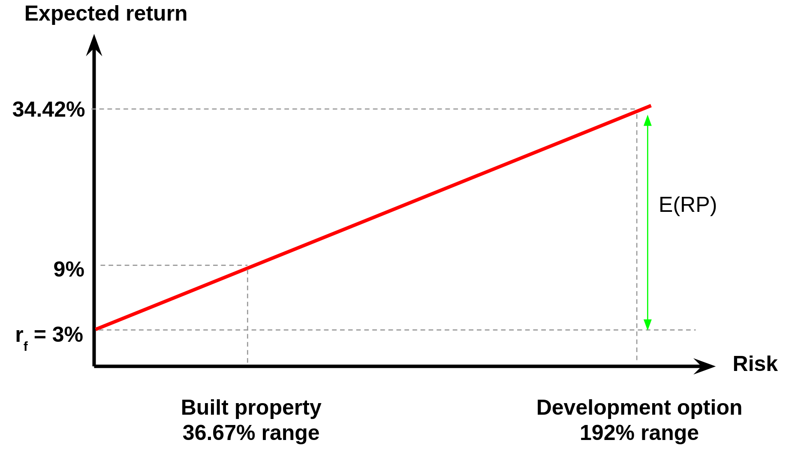</p>
## Applying binomial models<span class="subtitle"><br>Titman (1985): “Why do we see parking lots in downtown L.A.?”</span> * Two dates/two states model, similar to stylized example before <br> <p>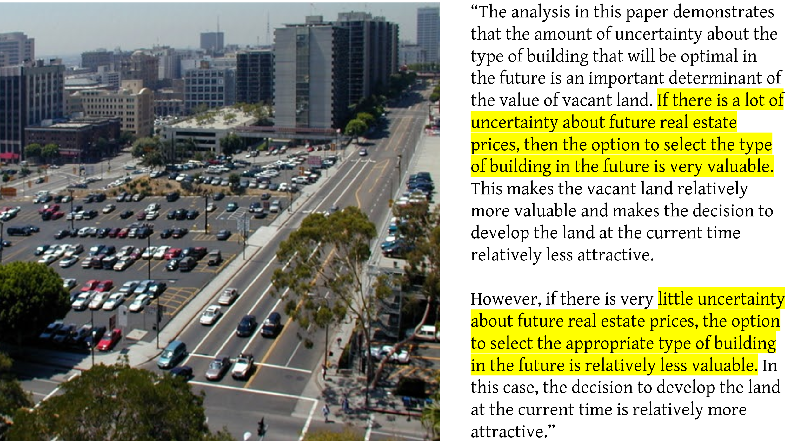</p>
## Continuous outcomes & time <span class="subtitle"><br> Black-Scholes (1973) approach</span> * Price for options with more than two states: Distribution of outcomes. * Based on same economic arbitrage principles as for binomial models in discrete time * European call options (and variations) * Requires several strong assumptions - Markets are frictionless: No transaction costs. One can buy/sell any fraction of underlying asset. - Markets are efficient: No predictability. - European option that can only be exercised at expiration date. - No dividends are paid out during the life of the option. - The risk-free rate and volatility of the underlying are known and constant. - The returns on the underlying asset are (log)normally distributed.
## B/S Option Pricing <span class="subtitle"><br>(For those brave enough to believe that assumptions are met...)</span> * Price of a European call option on a non-dividend-paying stock is given by - $ c = SN(d_1)-Ke^{rt}N(d_2)$, * where - $d_1 = \frac{ln(S_0/K) + (r+\sigma^2/2)T}{\sigma\sqrt{T}}$, and - $d_2 = d_1 - \sigma\sqrt{T}$ * with - c = European call option price - S = current asset price - K = current exercise price - r = riskless interest rate - t = time to maturity - $\sigma$ = volatility - $N(d_1)$ = Prob. of a normally distributed random variable being lower or equal to $d_1$
## Develop anytime<span class="subtitle"><br>American options more realistic for land.</span> * Classical Samuelson-McKean formula for American warrant * Again, based on same economic arbitrage principles as models in discrete time or Black-Scholes approach * Again, requires several strong assumptions - Frictionless markets / efficient markets: “Random Walk” market value of underlying asset / Normally distributed returns to underlying asset * Requires parameter values for - Built property cash yield $y_V$ - Volatility of underlying asset $\sigma^2_V$ - Risk-free rate $r_f$ - Real growth rate of construction costs $g_K$ - Value (V) of built asset, expressed relative to construction cost K
## Samuelson-McKean formula<span class="subtitle"><br>Easy enough for calculators or Excel</span> * Option elasticity - $\eta = \frac{ y_V - y_K + 𝜎^2_V/2 + \sqrt{( y_K - y_V - 𝜎^2_V/2)^2 + 2y_k\sigma^2_V} } { 𝜎^2_V}$ - $\eta$ gives the percentage change in value of option associated with a 1% change in the value of the underlying asset (built property) - “Construction yield” $y_K = r_f-g_K$, where $g_K$ is the real growth in construction costs * Optimal development hurdle rate $V^{*}$ - $V^{*} = K_0\eta/(\eta-1)$ * Option value (vacant land) - $C_0 = (V^{\*} - K_0)(V_0/V^{\*})\eta $ * Spreadsheet uploaded to Moodle * Visualisation: <a href="http://demonstrations.wolfram.com/RealOptions/">http://demonstrations.wolfram.com/RealOptions/</a>
## Samuelson-McKean Model <span class="subtitle"><br> Land value modelled as an American option</span> * Plug into Spreadsheet: Volatility 15%, current asset yield 8%, $r_f$ 5% <p>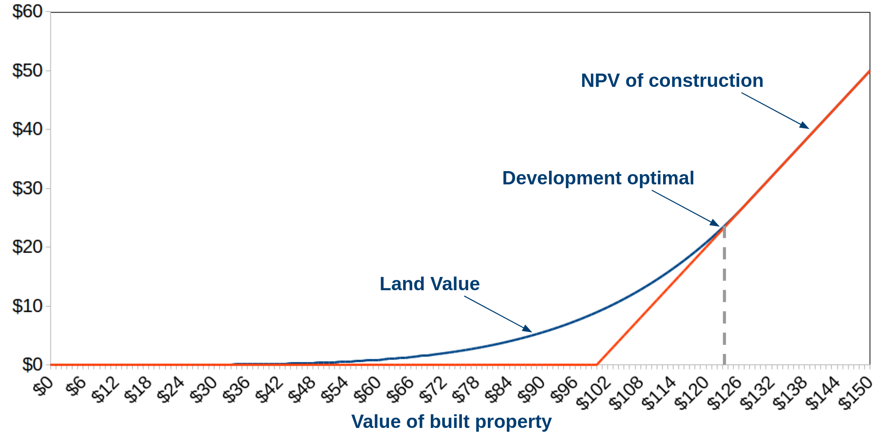</p>
## Samuelson-McKean Model <span class="subtitle"><br> Land value modelled as an American option</span> * Increase in volatility boosts option value: Volatility 15% & 20% <p>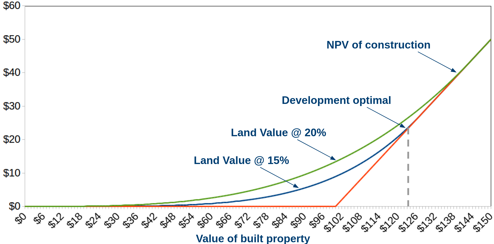</p>
Break
10 minutes
## How useful is this? <span class="subtitle"><br>Can we use option theory to trade or to benchmark investments?</span> * Highly efficient markets of commodity like assets like public stock and bond markets - Arbitrage derivation of option theory applies directly * Well functioning markets with frictions and some uniqueness of assets like prime commercial properties - Less stringent assumption: Equilibrium within and across markets assumed - Deviations from values based on option theory do not lead to risk-free profits, but one can still expect positive abnormal returns when buying and selling according to model * No functioning market, very unique assets - Option value theory loses basis but remains normative: “Value <em>should</em> be …”
## Project value <span class="subtitle"><br>DCF plus option value?</span> $$V_0 = \sum^{\infty}_{t=1}\frac{CF_t}{(1+r_t)^t} + OV$$ * Volatility reduces value of DCF component but increases OV?
## Pitfalls <span class="subtitle"><br>Not all volatility is ultimately adding option value.</span> * In most examples, volatility is measured as asset price volatility * For developers, construction costs are also uncertain - and determine profits. - Constructions costs distribution is highly skewed: Hardly ever below initial estimate <p>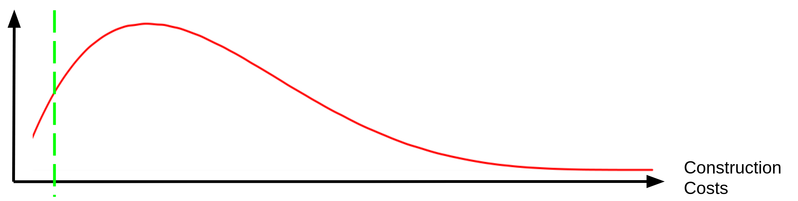</p>
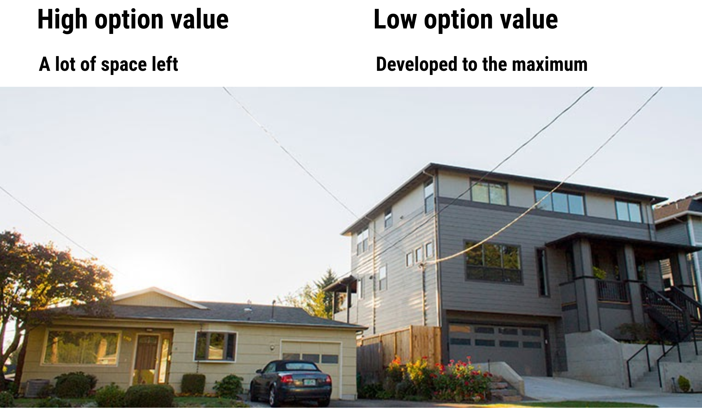
## Empirical pricing <span class="subtitle"><br> Estimating real option values</span> * Clapp, Jou & Lee (2012), who show that the hedonic model can be extended to include an option value term * Clapp, Eichholtz, Lindenthal (RSUE, 2013): For all single-family buildings in Berlin, we calculated the unrealized space reserve - How much could buildings be extended under current zoning? * This metric can be added to a hedonic pricing equation - just like other building attributes.
## Volatile OV <span class="subtitle"><br>Real options contribute to market volatility</span> * Option value sensitive to market cycle: Exacerbates volatility in prices * Up to 24% of total value of a property can be attributed to real option value <p>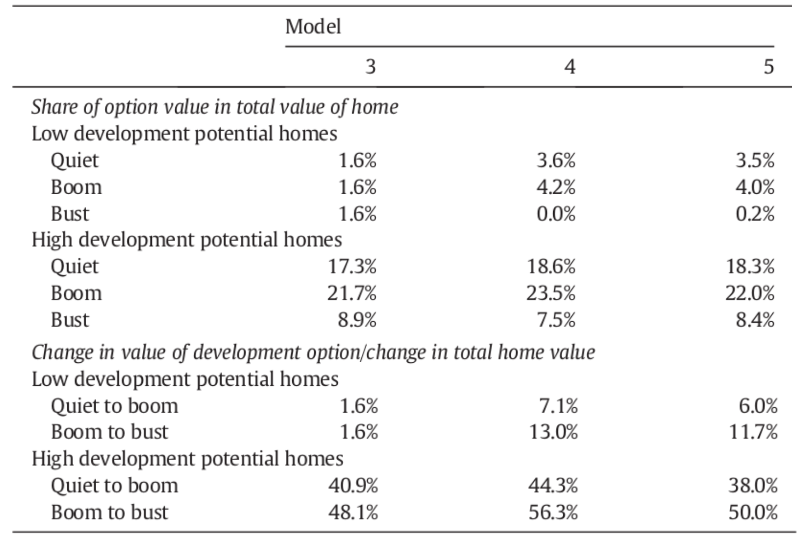</p> <p class="source">Source: Clapp, Eichholtz & Lindenthal</p>
## Volatile OV <span class="subtitle"><br>Small change in asset value can lead to large changes in OV.</span> <div class="figure"> <p>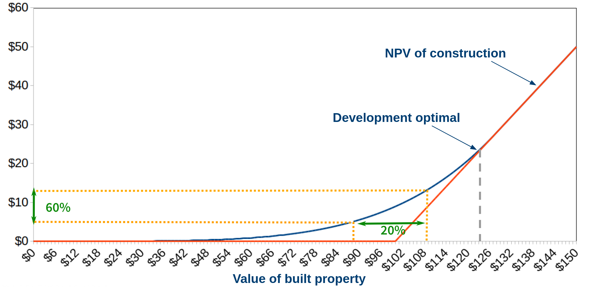</p> </div>
## <span class="subtitle"><br></span>
## <span class="subtitle"><br></span>
## <span class="subtitle"><br></span>
## <span class="subtitle"><br></span>
## <span class="subtitle"><br></span>
## Options Shape Risk<span class="subtitle"><br>Same lot: just before and after the redevelopment option is exercised</span> * Split property value into structure (discounted rents) and land (the residual—roughly the value of the redevelopment option) | | Before: semi, redevelopment triggered<br><p>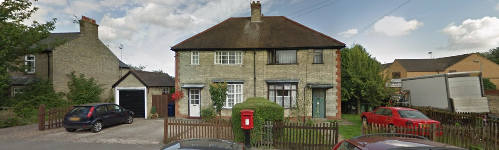</p> | After: option exercised<br><p>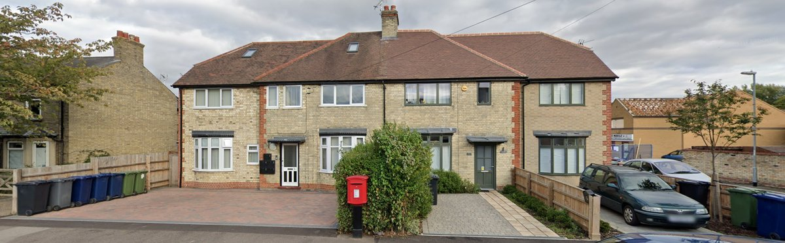</p> | |:-----|-----:|-----:| | Property value (current) | £1,000K | ~£3,550K | | Property (highest and best use) | £3,500K | £3,500K | | Current structure (DCF) | £200K | £3,500K | | Constr. cost (excl. land) | £2,500K | £2,500K | | Land value (Samuelson-McKean*) | £800K | £50K | <p class="source">* <a href="https://docs.google.com/spreadsheets/d/1ZFnyyHze9uvHZMFEPuiY2sxWSYCtbp26/edit?usp=sharing&ouid=106899193538582867949&rtpof=true&sd=true">Spreadsheet</a>: 8% volatility of underlying, asset yield 5%, R<sub>f</sub> 5%, exercise price = constr. cost + value of current structure. Semi: V ≥ trigger (~£3,475K), so redeveloping is optimal and land = V − exercise price</p>
## Options Shape Risk<span class="subtitle"><br>Now assume a positive shock to rents: +10%</span> * Structure value increases with rents… But what about land? | | Before: semi, redevelopment triggered<br> | After: option exercised<br> | |:-----|-----:|-----:| | Property | ? | ? | | Structure (+10%) | £220K | £3,850K | | Land | ? | ? |
## Options Shape Risk<span class="subtitle"><br>How does land value respond?</span> * <a href="https://docs.google.com/spreadsheets/d/1ZFnyyHze9uvHZMFEPuiY2sxWSYCtbp26/edit?usp=sharing&ouid=106899193538582867949&rtpof=true&sd=true">Rough land value estimate</a> from the Samuelson-McKean formula (the assumptions need some convincing) | | Before: semi, redevelopment triggered<br> | After: option exercised<br> | |:-----|-----:|-----:| | Property | ? | ? | | Structure (+10%) | £220K | £3,850K | | Land | £1,130K | £62K |
## Options Shape Risk<span class="subtitle"><br>Option values and property investment: why do we care?</span> * Same location, same market segment… but a very different risk/return profile once the option is exercised! | | Before: semi, redevelopment triggered<br> | After: option exercised<br> | |:-----|-----:|-----:| | Property | £1,350K (+35%) | ~£3,912K (+10.2%) | | Structure (+10%) | £220K | £3,850K | | Land | £1,130K | £62K |
## Multiple Options <span class="subtitle"><br>Properties have many real options embedded</span> * Earlier models covered one option only. * Total OV is not sum of individual OV! * How to value interdependent options? - Option Y depends on option X being exercised first * Mutually exclusive options - Once X is exercised, Y is not feasible anymore - Option to default on mortgage vs option to prepay
## Multiple Options <span class="subtitle"><br>Land assembly in Amsterdam, 1832–2015<br/>(Lindenthal, Eichholtz, & Geltner; RSUE 2017) </span>
## Whom to work with? <span class="subtitle"><br>Modelling land assembly </span> <p>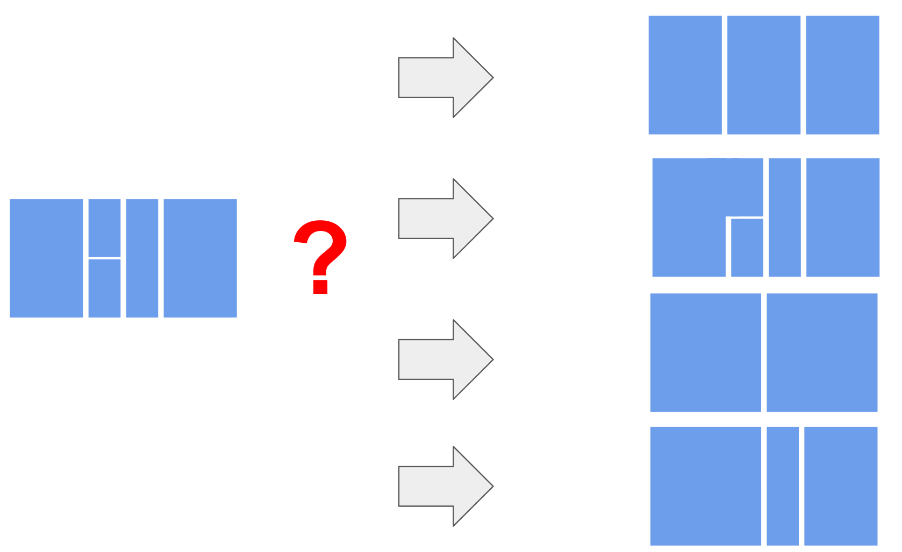</p>
## 1832 <span class="subtitle"><br>Many small lots, relatively homogeneous.</span> <p>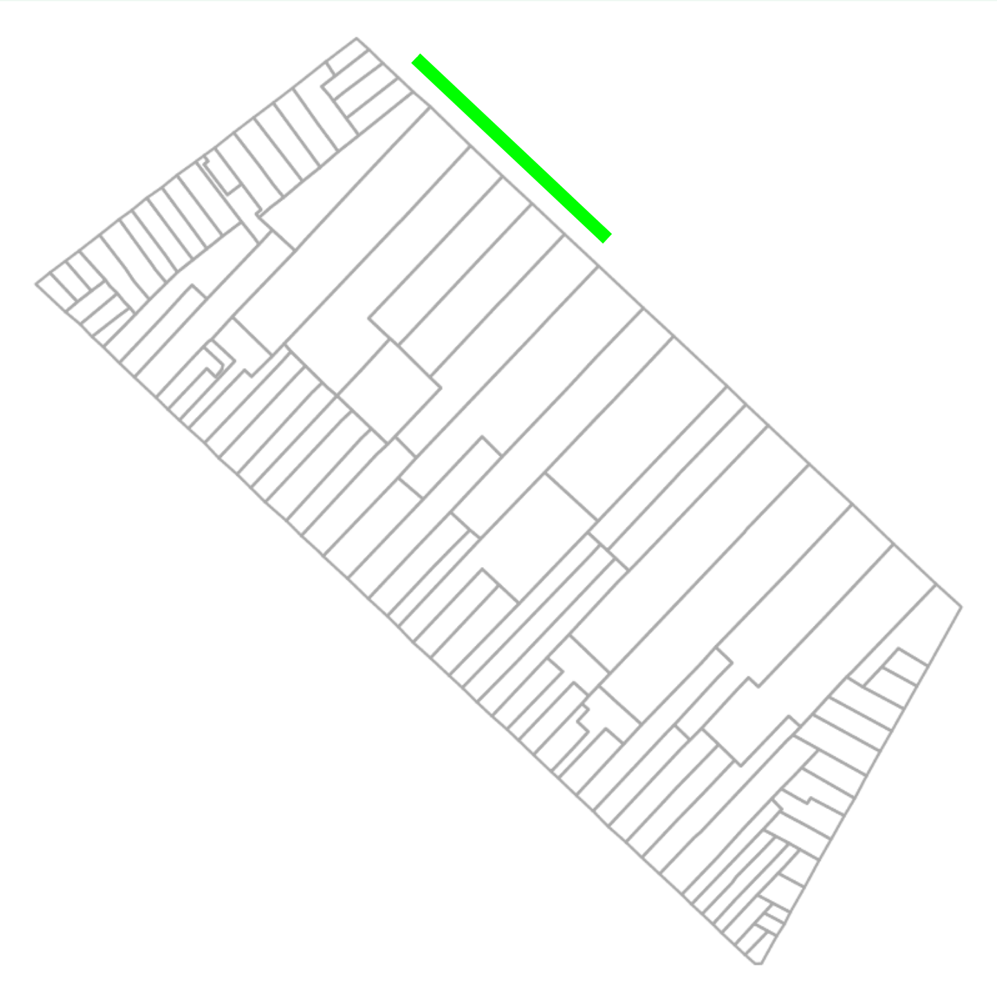</p>
## 1860 <span class="subtitle"><br>A few changes.</span> <p>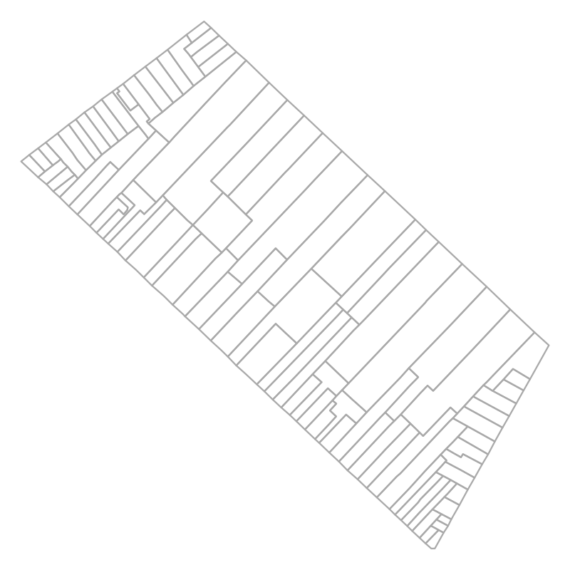</p>
## 2015 <span class="subtitle"><br>Some very large lots assembled!</span> <p>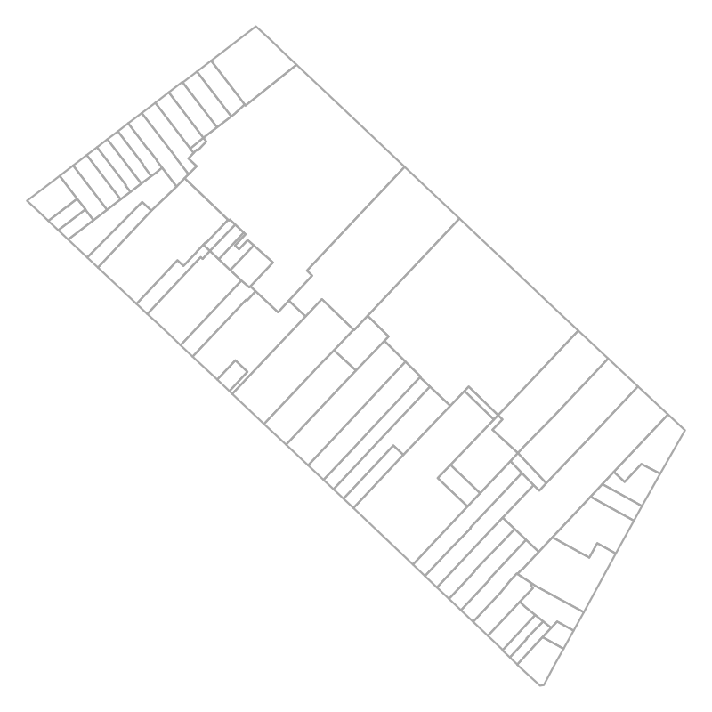</p>
## Option to default...<span class="subtitle"><br>… and its influence on prices: Bao & Ding (2016, REE)</span> * States with full recourse had less of a boom and a milder correction in last cycle. Option to default led to more risky borrowing and risk shifting. <p>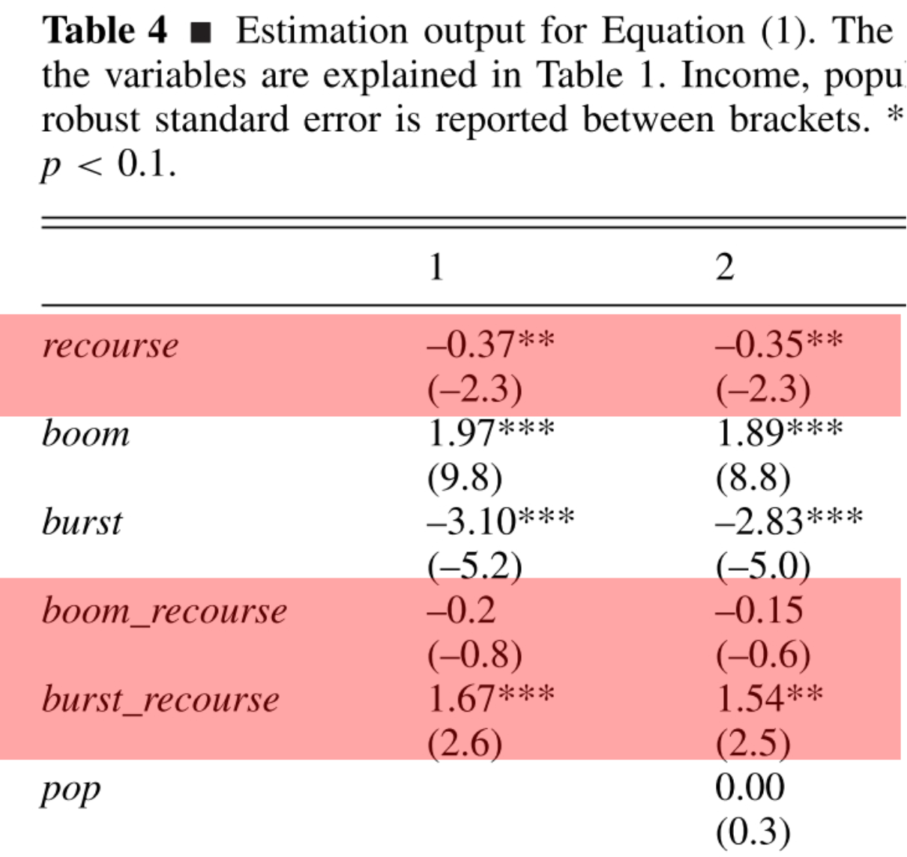</p>
Notes: China’s leaders have cheered on the property boom for the best part of 30 years. When the central government overhauled the tax system in 1994, local authorities lost a large chunk of revenue. At the same time, local governments were prevented from issuing debt. Yet they were tasked with hitting high economic-growth targets, sometimes exceeding 10% a year. Selling land became one of the few things municipal officials could do to generate revenues, which would in turn finance roads and other public works. They could also set up companies that could borrow from banks and raise debt from other sources. This arrangement meant economic growth was tightly bound to booming property. Between 1999 and 2007 the quantity of rural land transferred to urban use increased by an average annual rate of almost 23%, and public-land sales soared by an average of 31% a year. Soon the property market became the prime lever for controlling economic growth. During the global financial crisis much of China’s `$`586bn stimulus package came in the form of loans and shadow-banking funds for developers. “The property market was a vehicle for delivering the stimulus,” says Kevin Lai of Daiwa Capital Markets, a broker. By 2010 land sales accounted for more than 70% of municipal incomes a year, although the rate varied between regions.
## Overdependence on Land<span class="subtitle"><br>Land sales dominate funding of Chinese municipalities</span> <table class="noborders" style="padding: 50;"> <tr> <td> <ul> <li>Local authorities rely on land sales (or rather long-term leases) for funding.</li> <li>Between 1999 and 2007 the quantity of rural land transferred to urban use increased by ~23% annually.</li> <li>Public-land sales soared by an average of 31% a year.</li> <li>By 2010 land sales accounted for <strong>more than 70% of municipal incomes</strong> a year.</li> </ul> </td> <td> <div style="margin: 0.5em;"> <p>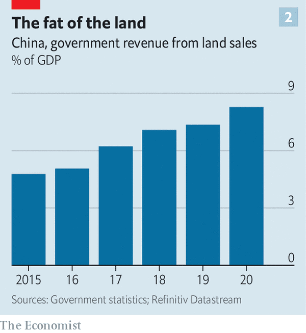</p> </div> </td> </tr> </table><span class="source">Source: <a href="https://www.economist.com/finance-and-economics/how-a-housing-downturn-could-wreck-chinas-growth-model/21805115">The Economist (2021)</a></span> Notes: China’s leaders have cheered on the property boom for the best part of 30 years. When the central government overhauled the tax system in 1994, local authorities lost a large chunk of revenue. At the same time, local governments were prevented from issuing debt. Yet they were tasked with hitting high economic-growth targets, sometimes exceeding 10% a year. Selling land became one of the few things municipal officials could do to generate revenues, which would in turn finance roads and other public works. They could also set up companies that could borrow from banks and raise debt from other sources. This arrangement meant economic growth was tightly bound to booming property. Between 1999 and 2007 the quantity of rural land transferred to urban use increased by an average annual rate of almost 23%, and public-land sales soared by an average of 31% a year. Soon the property market became the prime lever for controlling economic growth. During the global financial crisis much of China’s `$`586bn stimulus package came in the form of loans and shadow-banking funds for developers. “The property market was a vehicle for delivering the stimulus,” says Kevin Lai of Daiwa Capital Markets, a broker. By 2010 land sales accounted for more than 70% of municipal incomes a year, although the rate varied between regions.
## Then the Underlying Collapsed<span class="subtitle"><br>China’s land-sale model since the 2021 property downturn</span> * Land-sale revenue has fallen four years running: H1 2026 −31.5% YoY (<a href="https://www.theepochtimes.com/china/chinas-land-sale-revenue-slump-deepens-despite-rise-in-fiscal-income-6066681">MoF data</a>); residential land revenue in 2025 ~65% below its 2020 peak (<a href="https://www.caixinglobal.com/2026-01-06/chinas-residential-land-sales-revenue-slumps-65-from-peak-as-state-backers-retreat-102400671.html">Caixin</a>) * LGFVs (local governments’ own financing vehicles) propped up land auctions after 2021, but their share of purchases fell to 15% in 2025; state-owned developers now buy about half (<a href="https://www.caixinglobal.com/2026-01-06/chinas-residential-land-sales-revenue-slumps-65-from-peak-as-state-backers-retreat-102400671.html">Caixin</a>) * Aug 2026 pre-sale reform: Goldman expects a further ~30% drop, up to 90% below the 2021 peak (<a href="https://www.bloomberg.com/news/articles/2026-09-07/china-property-moves-to-fuel-30-hit-to-land-sales-goldman-says">Bloomberg</a>) * Real-options view: municipal income was essentially the value of the option to develop land—and that option value collapses with the underlying housing market
## Land & financial markets <span class="subtitle"><br>Large land reclaimation projects spurred financial innovation.</span> * Tradable bonds and public exchanges – both were invented when massive projects needed to be financed in the early-modern Netherlands. * Oldest known bond in the world that still produces interest is the perpetual 2.5% issued in 1624 to finance the Lekdijk Bovendams, a 33 km long dyke protecting large parts of Holland and Utrecht. Notes: * The oldest known bond in the world that still produces interest is the perpetual 2.5% loan worth 1200 guilders, issued in 1624, of the Lekdijk Bovendams water board. The Lekdijk Bovendams, a 33 kilometer long dyke from Amerongen to Vreeswijk, protects large parts of Holland and Utrecht against the water. After a dyke burst in 1624, the water board decided to issue interest letters (bonds) in order to finance restoration. In later years, the water board would do this more often. What has made the 1624 debenture so special is the fact that after nearly four centuries, it still pays interest. An amount of 15 euros a year, to be precise.
## Securitised Land <span class="subtitle"><br>Holland Land Company</span> * In 1792-93 Dutch investors bought 13,000 square-kilometres of land in Western New York. * Purchase was financed by the public issuance of securities that traded on the Dutch capital market. - Idea was to subdivide the land and to sell it off to settlers, serve the debt, and to keep the upside.
## <span class="subtitle"><br> </span> Notes: * Took longer than expected: 40 years in total * Restructuring of the debt after a few years. Exchange for equity. Might have been the better choice to begin with. * Big investments in infrastructure needed: Surveying, roads, canals
## Real Options<span class="subtitle"><br>The right way to value real estate?</span> * Yes! High degree of managerial discretion and strong dependence on cycle/economy make DCFs impractical - How many states can your spreadsheet fit? - How reliable are probability estimates? * No! Assumptions underlying option valuation approaches are unrealistic for properties - Frictionless markets? Efficient markets? Not really. - Parameter uncertainty: Known variance? No changes in time? No. * So? It definitely helps when comparing projects. - If projects are otherwise similar, pick the one with higher OV.
## Further Reading <span class="subtitle"><br>Book chapters & papers referenced in this session</span> * <strong>Book:</strong> Geltner, Miller, Van de Minne, Eichholtz, Lindenthal & Shen, <a href="https://www.routledge.com/Commercial-Real-Estate-Analysis-for-Investment-Finance-and-Development/Geltner-Miller-VanDeMinne-Eichholtz-Lindenthal-Shen/p/book/9781041076391"><em>Commercial Real Estate Analysis for Investment, Finance, and Development</em></a> (4th ed., 2026) — online Part IV (Real Estate Development, Land Valuation & the Real Options Model) * Titman, S. (1985). <a href="http://www.jstor.org/stable/1814815">Urban Land Prices Under Uncertainty</a>. <em>American Economic Review</em>, 75, 505–514. * Black, F. & Scholes, M. (1973). <a href="https://doi.org/10.1086/260062">The Pricing of Options and Corporate Liabilities</a>. <em>Journal of Political Economy</em>, 81, 637–654. * Bao, T. & Ding, L. (2016). <a href="https://doi.org/10.1111/1540-6229.12116">Nonrecourse Mortgage and Housing Price: Boom, Bust, and Rebound</a>. <em>Real Estate Economics</em>, 44, 584–605.